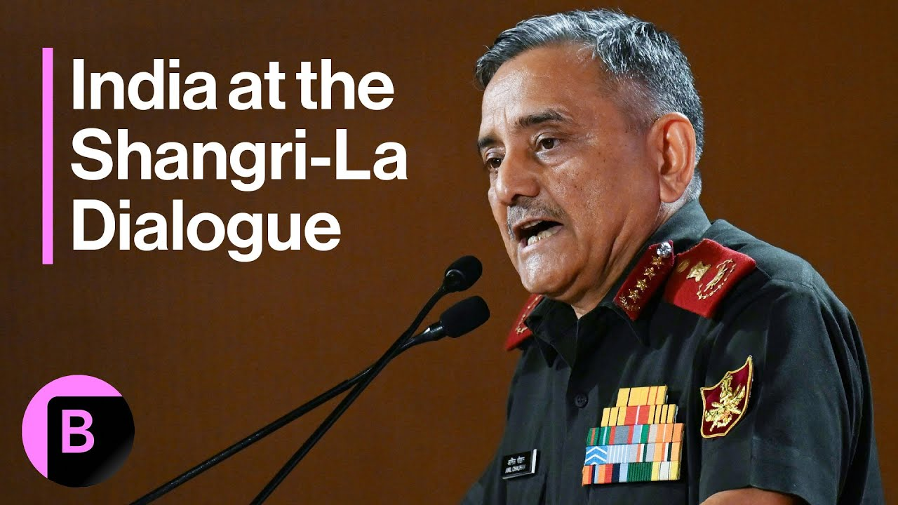

【印度确认在近期与巴基斯坦的冲突中损失战斗机】
Summary: The paragraph discusses the aftermath of the India-Pakistan conflict, focusing on the number of jets downed, tactical mistakes, the state of bilateral relations, and the low risk of nuclear escalation.
摘要： 该段落讨论了印巴冲突的后续，重点关注被击落的战机数量、战术失误、双边关系现状以及核升级的低风险。

⏱️ Estimated Reading Time: 4 min
Since the incident between Pakistan and India, and that is whether or not Pakistan downed an Indian jet or, in fact, more than that.
自巴基斯坦和印度之间发生这一事件以来，问题在于巴基斯坦是否击落了一架印度战机，或者实际上更多。
Can you confirm?
你能确认吗？
What is important is that the not the jet being down, but why they were being.
重要的不是战机被击落，而是它们为什么被击落。
But what?
但什么？
Yeah.
是的。
Yeah.
是的。
Why?
为什么？
Yeah, why, David?
是的，为什么，大卫？
Well, the good part is that we're able to understand the tactical mistake which we made.
好的方面是我们能够理解我们所犯的战术错误。
Remedied, rectified, and then implemented again after two days and flew all our jets again, targeting a long range, which has had.
我们纠正、修正并在两天后再次实施，重新派出所有战机，瞄准远程目标。
Pakistan claims six Indian jets were downed.
巴基斯坦声称击落了六架印度战机。
Is it correct in that estimate?
这个估计正确吗？
Absolutely incorrect.
绝对不正确。
And that is not information because it is important.
这不是信息，因为它很重要。
What is important is what they were doing.
重要的是他们在做什么。
That is more important for us.
这对我们来说更重要。
And what did we do after that?
之后我们做了什么？
That's more important, I guess, that the world is asking for clarity because these are words that came from Pakistan, whether they were six or whether it was fewer.
我认为更重要的是，世界要求澄清，因为这些是巴基斯坦的说法，无论是六架还是更少。
So just to get clarity.
所以只是为了澄清。
Indian jets were downed, but the six the numbers, the numbers are not important.
印度战机被击落，但六架这个数字并不重要。
Why they were down.
它们为什么被击落。
What mistakes were made that are important.
犯了什么错误才是重要的。
What's the state of relations between Pakistan and India at this point in time?
目前巴基斯坦和印度的关系状况如何？
We are back to a normalization of a relationship in the sense that we have an agreement.
我们的关系已恢复正常化，因为我们达成了协议。
We can't call it a ceasefire.
我们不能称之为停火。
Cessation of hostilities is there.
敌对行动已经停止。
And we are seeing that that on the borders, whatever force has had to come into place, they go back.
我们看到在边境上，任何必须部署的部队都已撤回。
So it's hopefully it will remain like this.
所以希望这种情况会持续下去。
The state of a relationship depends exactly on what Pakistan how Pakistan will behave in future.
关系的状况完全取决于巴基斯坦未来如何行事。
And what India has done is we have laid the clear red lines, the limit of tolerance against terror.
印度所做的是划定了明确的红线，即对恐怖主义的容忍限度。
So the state of relationship is purely dependent upon how Pakistan is behave in future.
因此，关系的状况完全取决于巴基斯坦未来的行为。
The world is watching developments really closely because both Pakistan and India are nuclear powers.
世界正在密切关注事态发展，因为巴基斯坦和印度都是核大国。
What was the risk of a nuclear war erupting?
爆发核战争的风险有多大？
I think none whatsoever, because I personally feel that there's a lot of space between conduct of conventional operations and the nuclear threshold.
我认为完全没有，因为我个人认为常规行动和核门槛之间有很大的空间。
And we have demonstrated that not once, not twice.
我们已经不止一次、不止两次地证明了这一点。
So it was during URI, then It was.
比如在乌里事件期间，然后是。
Your pulwama plot pulwama Balakot strikes and no.
你们的普尔瓦马阴谋、普尔瓦马、巴拉科特空袭，但没有。
And what I personally feel one of the experiences from this particular conflict is not only the escalation ladder, which we continue with Pakistan.
我个人认为，这次冲突的一个经验不仅是与巴基斯坦的升级阶梯。
In each of these ladder they are much more sub ladders which can be exploited for settling old tariff issues without actually raising that nuclear bogey.
在这些阶梯中，还有更多子阶梯可以利用来解决旧的关税问题，而不必真正提出核威胁。
And that's too far fetched.
那太牵强了。
That question was asked because the US, in fact President Trump said that the US managed to stop a possible nuclear war and so I can't comment on that.
提出这个问题是因为美国，事实上特朗普总统说美国成功阻止了一场可能的核战争，所以我无法对此发表评论。
But there was nothing like that between us and Pakistan and our channels of communication with them were always open.
但我们和巴基斯坦之间没有这样的事情，我们与他们的沟通渠道一直是开放的。
And that's one way to control escalation that I think was never on the cards.
这是控制升级的一种方式，我认为这从未在考虑范围内。